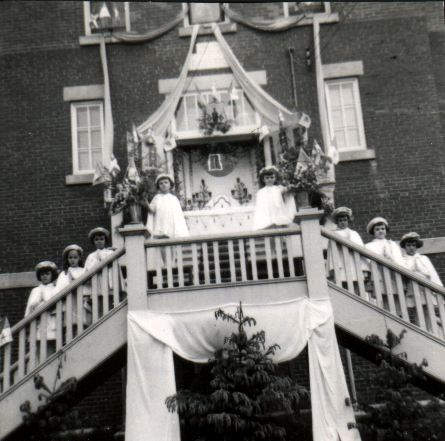

THIS PHOTO WAS TAKEN AT THE CONVENT IN ST-AIMÉ DURING THE FÊTE-DIEU (CORPUS CHRISTI) OF 1953. (St-Aimé is now called Massueville)
NICOLE, THEN A BOARDER AT THE CONVENT, IS IN IT ( at the top of the stairs, on the right).
